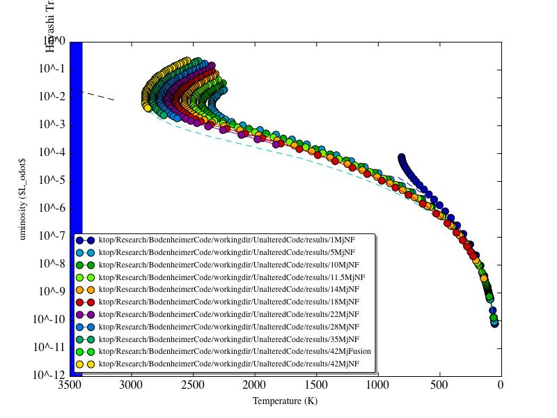
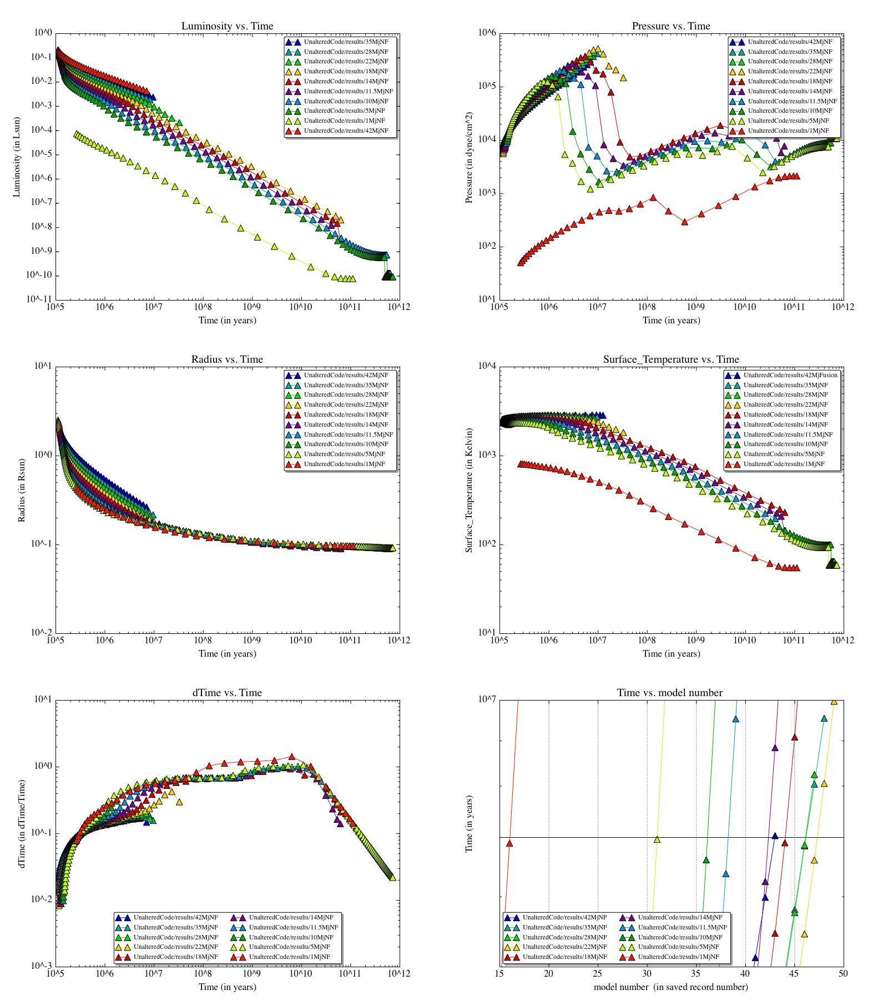
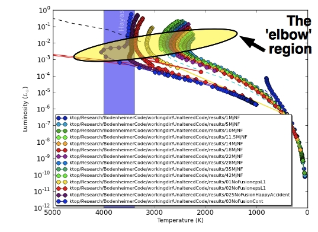

Figure
3: "Results" (such as they are) from the 01NFChainDown
run. Earlier times = blue = higher masses. Later times = pink =
lower masses.
Date & Time: May 1, 2012
Location: Home
Computing context: Macho Mac: /Desktop/Research/BodenheimerCode/workingdir/UnalteredCode/
Today's paper:
Go back through yesterday's paper (Boley et al. 2012) and make a list of all the citations in there that you want to follow up on
Import those papers into Mendeley
Also list them here. Or at least, make a list of them to post on the blog (maybe on its own page?). (Is there some way to link my Mendeley account to the blog? Like "papers in the to-be-read queue"?)
Scripts/Software created today:
Useful computer stuff figured out today:
Continuing from last time:
I'm investigating whether or not tracking my code on GitHub is a good thing to do. Right now, I'm downloading the most recent version of GitHub to install on Macho Mac, and will give it a try with the code in /Research/BodenheimerCode/workingdir/UnalteredCode/. Not sure if the extra overhead will be worth my time, but it's worth a shot. Also, backing up my data and results = always a good idea.
So far, not really having much success backing up my BodenheimerCode directory contents that way. It's not the most intuitive framework, either. Will keep poking at this tomorrow. Possibly ask Nathan, Stefano, James, or Jill for help-- or at least for their opinions-- on version control frameworks. (And on GitHub, specifically.)
Figure out why all of my simulations (below a certain mass, at least) fail to converge once they start hitting that slight 'elbow' in their HR diagram evolution.
Look into adding the atmospheric calculations that are in TheCode.f here into my C++ code. Go over the section on the atmos. outer boundary conds. in the chapter from Peter's book. Note: you should have a scanned copy of that somewhere in one of your emails. Find it and download it onto this machine. (Can also annotate that pdf on this local machine, too...)
Try running models from the mass chain-down procedure with masses between 10Mj and 42Mj to see where the boundary b/w successful evolution down those Burrows 1997 tracks and failed convergence lies. Maybe examining those results (and figuring out what the critical mass there is) will help me to figure out what's causing the intermediate mass simulations to stop converging near that 'elbow' in the HR diagram evolution.
|
Mass in grams |
Mass in Msun |
Mass in Mjup |
Time (seconds) |
Record number on 025NFChainDownTest |
Name of the no-fusion forward run |
Results |
|
3.18E+032 |
0.16 |
167 |
3.1401D+12 |
11 |
|
|
|
2.54E+032 |
0.13 |
134 |
3.2600D+12 |
13 |
|
|
|
2.04E+032 |
0.1 |
107 |
3.3368D+12 |
15 |
|
|
|
1.63E+032 |
0.08 |
86 |
3.3859D+12 |
17 |
|
|
|
1.30E+032 |
0.07 |
68 |
3.4174D+12 |
19 |
|
|
|
1.04E+032 |
0.05 |
55 |
3.4375D+12 |
21 |
|
|
|
8.34E+031 |
0.04 |
44 |
3.4504D+12 |
23 |
42MjNF |
Figure 1 (quits prematurely, doesn't make it past the elbow) |
|
6.67E+031 |
0.03 |
35 |
3.4586D+12 |
25 |
35MjNF |
See Figure 2 |
|
5.34E+031 |
0.026. |
28 |
3.5665D+12 |
51 |
28MjNF |
See Figure 2 |
|
4.27E+031 |
0.021. |
22 |
3.6603D+12 |
71 |
22MjNF |
See Figure 2 |
|
3.42E+031 |
0.017. |
18 |
3.8716D+12 |
77 |
18MjNF |
See Figure 2 |
|
2.73E+031 |
0.0137. |
14 |
4.0185D+12 |
81 |
14MjNF |
See Figure 2 |
|
2.19E+031 |
0.011. |
11.5 |
4.2686D+12 |
87 |
11.5MjNF |
See Figure 2 |
|
1.75E+031 |
0.088. |
9.2 |
4.4437D+12 |
91 |
10MjNF |
See Figure 1 (follows the Burrows et al. 1997 track pretty closely) |
|
1.40E+031 |
7.00E-003 |
7.40E+000 |
|
|
|
|
|
1.12E+031 |
5.40E-003 |
5.9 |
|
|
|
|
|
8.95E+030 |
4.50E-003 |
4.7 |
|
98 |
5MjNF |
See Figure 1 (follows the Burrows et al. 1997 track well) |
|
7.16E+030 |
3.60E-003 |
3.77 |
|
|
|
|
|
5.73E+030 |
2.90E-003 |
3.02 |
|
|
|
|
|
4.58E+030 |
2.30E-003 |
2.41 |
|
|
|
|
|
3.67E+030 |
1.80E-003 |
1.93 |
|
|
|
|
|
2.93E+030 |
1.47E-003 |
1.54 |
|
|
|
|
|
2.35E+030 |
1.18E-003 |
1.24 |
|
|
|
|
|
1.88E+030 |
9.45E-004 |
0.99 |
|
134 |
1MjNF |
See Figure 1 (follows the Burrows et al. 1997 track well) |

Figure
2: A comparison of the no-fusion evolution for systems with
masses between 1 and 42 Mjup. Starting models taken from the
025NFChainDownTest run. It looks to me like the critical mass for
making it past the elbow is somewhere between 18 and 28 Mjup.
From the results plotted in Figure 2, I think I want to take a closer look at the mass range between 18 and 28 Mjup.
I also wonder what would happen if I did a mass chain-UP from the 1 or 5 Mjup models, up to the 'critical' mass. Would that provide initial conditions for the heavier systems that would allow them to converge past the elbow?
Things to look into that might be halting evolution at the elbow:
Temperature boundaries at the lower/inner edge of the atmosphere
Something about the density contrast between the center and the photosphere?
From the results plotted in Figure 2, I think I want to take a closer look at the mass range between 18 and 28 Mjup.
I also wonder what would happen if I did a mass chain-UP from the 1 or 5 Mjup models, up to the 'critical' mass. Would that provide initial conditions for the heavier systems that would allow them to converge past the elbow?
Things to look into that might be halting evolution at the elbow:
Temperature boundaries at the lower/inner edge of the atmosphere
Something about the density contrast between the center and the photosphere?
To Do Today (Science-wise):
Results/summary from the lower-mass systems' evolution from last time, which I forgot to include in the April 30, 2012 entry:

Figure
1: A summary/comparison of the evolution of the lower-mass
systems from last time. The main reason I made these plots was to
help me see if I could pinpoint what caused the higher mass systems
to stall once they hit the 'elbow' in their HR diagram evolution.
The bottom right plot (Time vs. model number) lets me compare the
different systems when they're all around 7 million years old, which
is where the 42 Mjup system stalls.
Do this:
"I'm writing up what my remaining questions and issues with these results are, and will post those sometime in the next 24 hours on the blog, as well. When that's up (post will be titled May 1, 2012), I'd appreciate you're input on that stuff. I'll make sure to highlight the material that I want you to look at, so you don't have to wade through a wall of text that probably makes sense only to me."
Current issues:
Why do systems between ~0.25 Msun and ~22 Mjup fail to make it past the 'elbow' in their HR diagram evolution?
Note to
self: make a plot of all these cases, and circle what I mean by
'the elbow'
Done. See Figure 2 for this.

Figure
2: The treacherous 'elbow region,' defined.
Make a table of Case name vs. Model number (for the model closest in age to 7e6 years old) for all of the systems in Figure 1 above.
Use the mass
chain-down procedure to produce models with the following masses:
0.1 Mjup
(?)
0.5 Mjup
(?)
1 Mjup
(precisely, this time)
2 Mjup
3 Mjup
4 Mjup
5 Mjup
(precisely, this time)
6 Mjup
7 Mjup
8 Mjup
9 Mjup
10 Mjup
(precisely, this time)
How to do this...? Maybe start with a 0.1 Msun (100 Mjup) model, and chain down the mass in a different way, this time.
Take the initial mass (Minit) of the system, and scale it down to = Minit - 2Mjup.
factor = (Minit - 2Mjup) / Minit
zMnew = zMold * factor
zMass = zMass * factor
dM's = dM's * factor (<-- look at what you previously did in TheCode.f to check this is correct, though)
Name of this approach: thecodeMassChainDown2
Start the simulation/chain down from the 0.1MsunWithFusion result
Name of this run: 01NFChainDown
Done running this one (for now, at least). It's hanging once I get to ~1.31 Mjup. I think this might be because I let the code evolve too far forward in time by the time it hit the lower masses. (See Figure 3)
Figure
3: "Results" (such as they are) from the 01NFChainDown
run. Earlier times = blue = higher masses. Later times = pink =
lower masses.
However, it occurs to me that it isn't really necessary to keep trying to get the chain down to 1 Mjup. The whole point of this exercise is to furnish myself with test cases for debugging my C++ version of TheCode. So, as long as I've got a number of converged ~Mjup systems at my fingertips, I'm good to go.
Parse & plot the results of this chain-down run.
Tabulate which models from this chain-down run correspond to which record numbers and which masses (in units of Mjup), and save that text file in /results/01NFChainDown for future reference.
Results stored in /results/01NFChainDown/index_of_models.txt
Then, run all of the models with masses between 1 and 10 Mjup through the no-fusion version of TheCode until they crash or complete 900 timesteps (whichever comes first).
These are running right now. Names/masses of the simulations are:
10, 8, 7, 6, 5.7(?), 4, 3, 2.8, 2.3, 2, 1.8, 1.5 Mjup
Results: see Figure 4

Figure
4: Summary of the HR diagram evolution results from the lower
mass models created through the 01NFChainDown run. Looks like they
all behave well!
Make a
separate directory to store the ~Mjup testcases from 01NFChainDown
and 025NFChainDown, to keep track of which test cases will be at my
disposal for debugging my own code.
Done, sort of. Organized my /results folder so that it contains a
JupMods/ directory, containing all of the models and results from
the mass chain-downs-- so, all its members have masses between 1
and 100 Mjup. (There's some overlap b/w the JupMods and the
01Msun/ directory members, but oh well.)
Computing Housekeeping & Miscellanea:
Download my own C++ code from the campus server
Talk to Anna and/or Nathan about their version control systems for their code and results. (Apparently, neither of them use GitHub?)
Administrivia:
Collect the 'can you make it to my qual?' email responses, and use them to figure out when my qual should be
Fill out the purchase order form
Go on Amazon and get prices/quotes for the equipment I need:
Replacement laptop battery
A lock for the laptop
A 1-Terabyte external hard drive
Print out the Amazon listings I find for the equipments and staple it to the PO.
Upload my group meeting presentation and advisor meeting notes to the wordpress blog
Next steps:
Make a
separate directory to store the ~Mjup testcases from 01NFChainDown
and 025NFChainDown, to keep track of which test cases will be at my
disposal for debugging my own code.
Write up a small manifesto on 'How to get TheCode.f to converge, esp. for these lower-mass systems,' and post it on the blog.
Download my C++ Henyey code from the campus server onto this machine
Compare my ~1Mjup test cases to the Guillot 99 model I had been using as an input to my code.
Go over my code, and remind myself what the existing issues were with it when I last stopped
Make list of things to fix in my code
Start fixing/testing my code.
Also, make that list of citations to read up on from the Boley 2012 paper. (Prep. for my qual...)